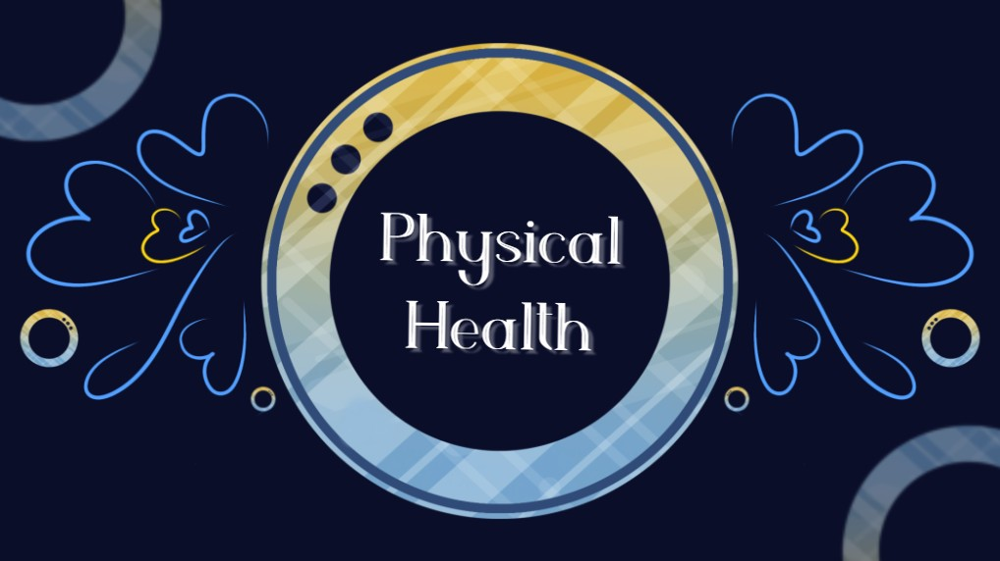

𝐏𝐡𝐲𝐬𝐢𝐜𝐚𝐥 𝐇𝐞𝐚𝐥𝐭𝐡
𝙿𝚑𝚢𝚜𝚒𝚌𝚊𝚕 𝚑𝚎𝚊𝚕𝚝𝚑 𝚌𝚊𝚗 𝚋𝚎 𝚍𝚎𝚏𝚒𝚗𝚎𝚍 𝚊𝚜 𝚗𝚘𝚛𝚖𝚊𝚕 𝚏𝚞𝚗𝚌𝚝𝚒𝚘𝚗𝚒𝚗𝚐 𝚘𝚏 𝚝𝚑𝚎 𝚋𝚘𝚍𝚢 𝚊𝚝 𝚊𝚕𝚕 𝚕𝚎𝚟𝚎𝚕𝚜; 𝚊 𝚗𝚘𝚛𝚖𝚊𝚕 𝚌𝚘𝚞𝚛𝚜𝚎 𝚘𝚏 𝚋𝚒𝚘𝚕𝚘𝚐𝚒𝚌𝚊𝚕 𝚙𝚛𝚘𝚌𝚎𝚜𝚜𝚎𝚜 𝚝𝚑𝚊𝚝 𝚎𝚗𝚜𝚞𝚛𝚎𝚜 𝚒𝚗𝚍𝚒𝚟𝚒𝚍𝚞𝚊𝚕 𝚜𝚞𝚛𝚟𝚒𝚟𝚊𝚕 𝚊𝚗𝚍 𝚛𝚎𝚙𝚛𝚘𝚍𝚞𝚌𝚝𝚒𝚘𝚗; 𝚊 𝚍𝚢𝚗𝚊𝚖𝚒𝚌 𝚋𝚊𝚕𝚊𝚗𝚌𝚎 𝚋𝚎𝚝𝚠𝚎𝚎𝚗 𝚝𝚑𝚎 𝚋𝚘𝚍𝚢'𝚜 𝚏𝚞𝚗𝚌𝚝𝚒𝚘𝚗𝚜 𝚊𝚗𝚍 𝚝𝚑𝚎 𝚎𝚗𝚟𝚒𝚛𝚘𝚗𝚖𝚎𝚗𝚝; 𝚙𝚊𝚛𝚝𝚒𝚌𝚒𝚙𝚊𝚝𝚒𝚘𝚗 𝚒𝚗 𝚜𝚘𝚌𝚒𝚊𝚕 𝚊𝚌𝚝𝚒𝚟𝚒𝚝𝚒𝚎𝚜 𝚊𝚗𝚍 𝚜𝚘𝚌𝚒𝚊𝚕𝚕𝚢 𝚞𝚜𝚎𝚏𝚞𝚕 𝚠𝚘𝚛𝚔.
𝙒𝙖𝙮𝙨 𝙩𝙤 𝙞𝙢𝙥𝙧𝙤𝙫𝙚 𝙋𝙝𝙮𝙨𝙞𝙘𝙖𝙡 𝙃𝙚𝙖𝙡𝙩𝙝
𝘗𝘰𝘴𝘪𝘵𝘪𝘷𝘦 𝘱𝘩𝘺𝘴𝘪𝘤𝘢𝘭 𝘩𝘦𝘢𝘭𝘵𝘩 𝘩𝘢𝘣𝘪𝘵𝘴 𝘤𝘢𝘯 𝘩𝘦𝘭𝘱 𝘥𝘦𝘤𝘳𝘦𝘢𝘴𝘦 𝘺𝘰𝘶𝘳 𝘴𝘵𝘳𝘦𝘴𝘴, 𝘭𝘰𝘸𝘦𝘳 𝘺𝘰𝘶𝘳 𝘳𝘪𝘴𝘬 𝘰𝘧 𝘥𝘪𝘴𝘦𝘢𝘴𝘦, 𝘢𝘯𝘥 𝘪𝘯𝘤𝘳𝘦𝘢𝘴𝘦 𝘺𝘰𝘶𝘳 𝘦𝘯𝘦𝘳𝘨𝘺.
Commit to a healthy diet.
Limit snacking.
Drink plenty of water.
Move more.
Get plenty of sleep.
Limit alcohol use.
Avoid tobacco products.